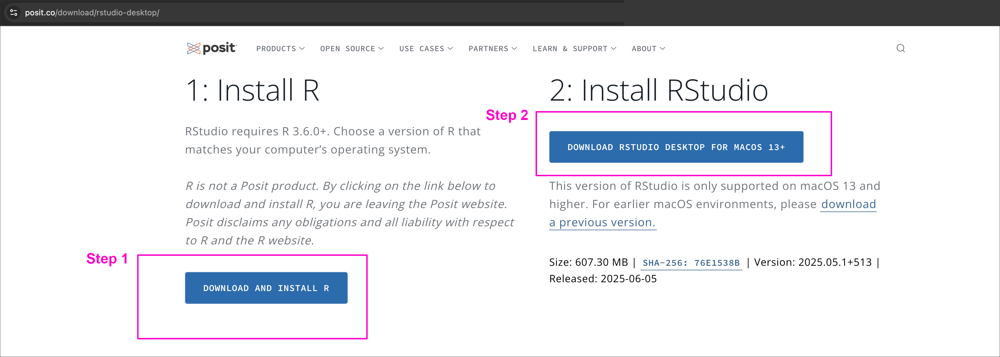
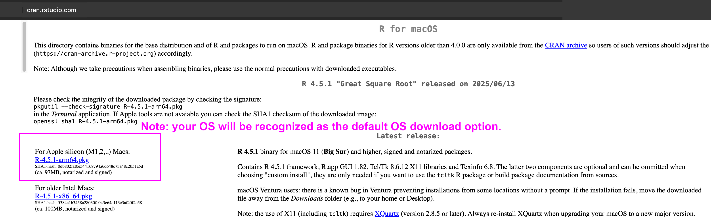
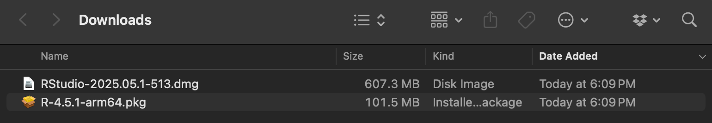
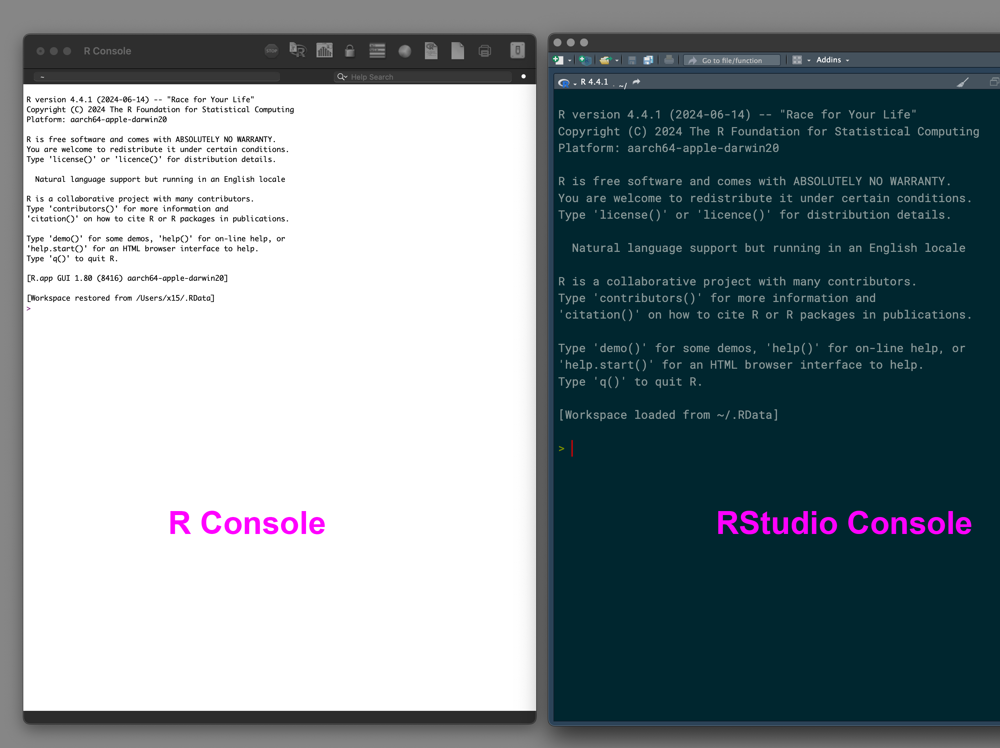
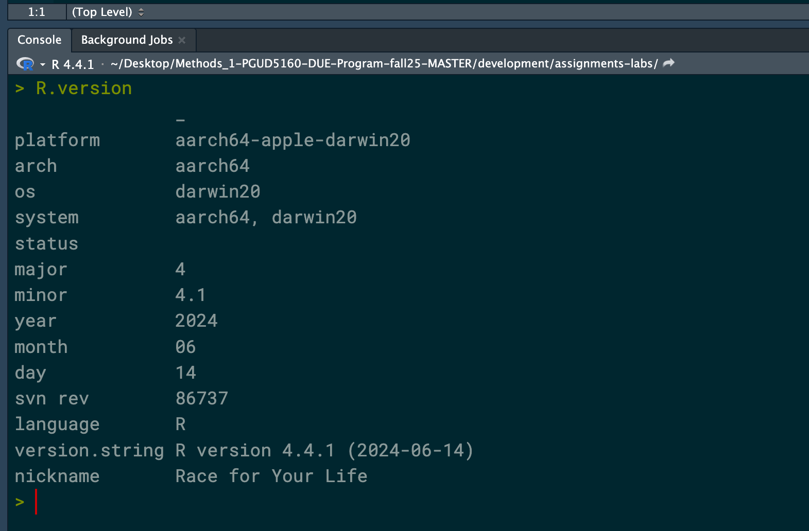
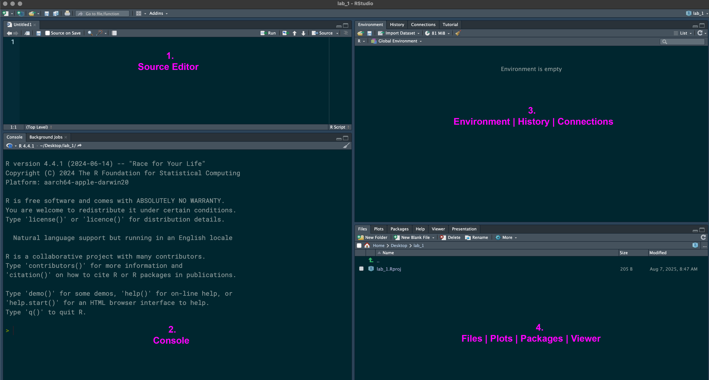
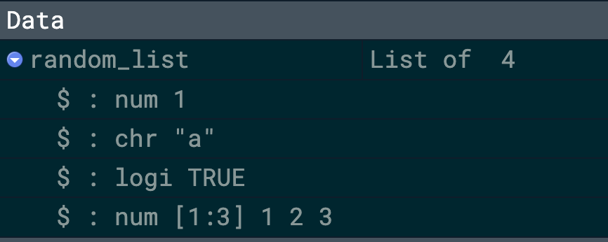
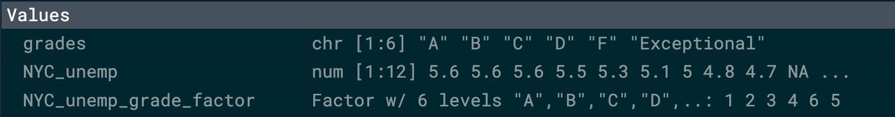

Class 1 Lab: Loading R Software + Fundamentals of Data Types and Forms in R
Fall 2025 | Instructor: Stephen Metts | PGUD 5160 - CRN 2247
Preamble
In this first demonstration lab, we will first download the necessary software for the course: first, R Interpreter, followed by RStudio. In July 2022, the company RStudio, PBC changed its name to Posit, PBC to reflect its broader mission beyond just the R language. Nicely for us, Posit makes the R components easy for download.
Once we finalizing the initial loads and ensure the software is working on our machines, we will seque to a series of guided prompts and exercises in order the understand the R interface as well as some of the basic syntax and forms of data germane to the R programming language and environment.
Part I: Loading Required R Programming Components
To start, we will navigate to the Posit web site and begin the software download process:
- Navigate to Posit Landing Page for R

Step 1:
Proceed to installation of R, followed by RStudio.

Once both installations have been downloaded successfully, note the location, file sizes and file extensions of each piece of software. Proceed to opening both the .pkg and the .dmg.

pkg and the dmg ready for installation in the downloads folderMake sure to follow the initial download order and install the pkg from R first; followed by the .dmg from RStudio. Don’t reverse the installation order.
If the installation process is successful, in the Applications folder, you should see icons for both the R and RStudio applications. Proceed to opening just the RStudio application.
In the following graphic, do note that both the R and RStudio applications have their own IDEs and you can very well continue to use R alone. However, the more common approach is to utilize the functionality of R via RStudio; that is, work primarily within RStudio.

Part II: RStudio Interface
Following the successful installation of the R programming components, we will review the RStudio interface and practice a series of fundamental R syntax and form conventions that will be necessary for Assignment #1.
Step 1:
To start, we will open RStudio and in the console - lower-left pane - enter the following command which should return information about the R install we’ve just accomplished:

R.version returns R install summaryNext, enter the get working directory command, which will return the current directory:
This first week we will not be too concerned with setting our working directory; the second week we will cover project management including directories.
Step 2:
Before proceeding into the functionality of R, we will first review the RStudio interface:
|
|
|
Files / Plots / Packages / Help / Viewer |

Tip: You can customize or move panes via Tools > Global Options > Pane Layout.
You can customize or move panes via Tools > Global Options > Pane Layout.
As noted above, RStudio is divided into four main panes, each with specific purposes to support coding, debugging, data visualization, and workspace management.
- Source (Top-Left Pane) Purpose: Where you write and edit R scripts, R Markdown documents, or view data files.
Common Tabs:
Untitled.Ror*.R: Script file tabs*.Rmd: R Markdown for reports/notebooks*.csv,*.txt: Data file previews
- Console (Bottom-Left Pane) Purpose: Where you execute R commands interactively.
Common Tabs:
Run code line-by-line
Test snippets before saving to a script
View immediate outputs or errors
- Environment / History / Connections (Top-Right Pane) Purpose: Shows all active objects (data frames, lists, vectors, etc.)
- Environment Tab:
- Show all active objects (data frames, lists, vectors, etc.)
- History Tab:
- Records all executed commands
- Connections Tab (if enabled):
- Manage database and data source connections
- Files / Plots / Packages / Help / Viewer (Bottom-Right Pane) Purpose: Shows all active objects (data frames, lists, vectors, etc.)
Files: Browse and manage files in your working directory
Plots: View visualizations generated by R
Packages: Install, update, and load R packages
Help: Search R documentation (
?function)Viewer: Displays HTML widgets or R Markdown output
Part III: Syntax, Functions and Data Types in R programming
Step 1:
Before reviewing standard R object types, we will get familiar with the console and some of the fundamental syntax of R programming. In the exercises below, necessary code snippets designed to run in the console can also be accessed by downloading the following script and opening it into the Source editor in RStudio:
R as a calculator. To start, we can do some basic syntax and functions via the console the way we would interact with a standard calculator.
- arithmetic operators
- creating and assigning variables
- using functions
First, let’s assign 5 to the variable x and 3 to the variable y. Once complete, we will see this variable assignment in the Environment pane. Continue apace to then use the console to add the variable x and the variable y.
- R functions. Functions are an unique kind of R object. Very simply, a function is an object that performs some action and (usually) produces an output. Functions exist to simplify a task. You can identify a function by the parentheses that are appended to the function name. A function looks like
function_name().
R has many functions that come built in. The collection of functions that come out of the box with R are called Base R.
An example of a simple base R function is sum(). sum() takes any number of inputs and calculates the sum of those inputs. Let’s try the following:
If you ever need to know how a function works, you can look at its help page by typing ?function_name() in your console. That will bring up the documentation page in the bottom right pane. Let’s enter the following as an example:
Step 2:
In R, a data structure is a specialized format for organizing, storing, and manipulating data. Beyond syntax and functions, these are the very building blocks necessary for data analysis. If we don’t have a data structure by which our data is organized, functionality is severely limited. Here we will review some of the basic data structures, and why we might want to use one versus another.
Atomic Vectors - (homogeneous) :
The most common way to create a vector in R is to use the c() function. This stands for combine. We can combine as many elements as we want into a single vector using c(). Each element of the vector is it’s own argument (separated by a comma).
For our example, we can utilize the average New York City Unemployment Rate (dating back to October 2024, through June 2025). This data can be accessed via the city’s Department of Labor, direct link to data
We can then apply a function to our newly created vector NYC_unemp and gain a valuable statistic:
If we were conducting an analysis for a full year dating back to October 2024, ideally we would have 12 months of data. In this case we only have data available to June 2025. What we might do is append the vector to include the missing months looking forward for our custom 12 month period.
This brings us to a critical point: R uses NA to represent missing data; we are always looking out for missing data because it can significantly impact our analysis of the data. In the following example, we add NA to July through September 2025 for a total of 12 months of data:
Let’s ensure we indeed have 12 months of data:
Sure enough, R recognizes our NA as missing data or rather correctly not available. But it could be there, and thus we have a placeholder, or better yet an indicator of missingness for 3 of our 12 months. Now, if we run our mean function on the new vector with NA values, we inevitably produce an NA result. We can get around this by appending our function to remove the NA, structured as follows:
Lists (recursive vectors - heterogeneous)
When creating our unemployment vector above, we utilized numbers exclusively, specifically a double (numeric), represented in our Environment panel as num. What if we create a vector with not just numbers, but a mix of numbers and characters and logical values? In the following example we include an integer, a character, a logical value and a ‘list within a list’:
Check the Environment panel result:

Factor (categorical data)
In our first unemployment vector example above, for each month we utilized a normalized number - a rate - of persons relative to a total population that are unemployment. Intuitively, we know this to be a number, or rather a statistic. Additionally, we might want to give a rank or some type of grading for each of our months. For instance, a low unemployment month might be deemed good or given a rating of A. When we are are concerned with categories and ranks, we are typically dealing with categorical data which R deems as type Factor. Here is a technical definition of a factor:
A factor in R is a data structure used to represent categorical variables. Technically, it is an integer vector with a set of predefined character labels called levels. Factors are used to store both nominal and ordinal categorical data efficiently and are treated specially in modeling functions.
To start, we will create a character vector representing grades to be theoretically applied to each month depending on its unemployment statistic; we will follow immediately by a print function:
Next, we transform this character vector into an explicit Factor and print its result:
In review of the resulting Environment panel, we can see we have very different values in our original grading system compared to the Factor version of the grading system:

When you create a factor, R will automatically arrange its levels alphabetically unless and until you provide a specific order.
Data Frame (tabular)
Arguably the Data Frame data type in R is its most flexible and powerful structure. Soon we will be reading into R relatively complex datasets that we will transform to the Data Frame data type, something which R can handle with great efficiency. To start, here is a definition of a data frame:
A data frame in R is a two-dimensional, tabular data structure where:
Each column is a vector (or factor) of the same length.
Columns can be of different types (numeric, character, logical, etc.).
It is the most commonly used structure for storing and manipulating datasets in R.
Think of it like a spreadsheet or SQL table — rows are observations, and columns are variables.
Using our example above of the unemployment rate per month in New York City, let’s finish the analogy as a data frame. We will first make a series of vectors, keeping in mind that the data type per vector needs to remain the same per vector:
NYC_unemp_rate <- c(5.6, 5.6, 5.6, 5.5, 5.3, 5.1, 5.0, 4.8, 4.7, NA, NA, NA)
NYC_unemp_grade <- c("D", "D", "D", "C", "C", "C", "B", "A", "Exceptional", "Not Available", "Not Available", "Not Available")
NYC_unemp_month <- c("october-24","november-24","december-24","january-25","february-25","march-25","april-25","may-25","june-25","july-25","august-25","september-25")To create the data frame, we can utilize the data.frame() function as follows:
NYC_unemp_dframe <- data.frame(month = NYC_unemp_month, rate = NYC_unemp_rate, score = NYC_unemp_grade)Print the data frame to the console:
Concluding Remarks
In this first demonstration lab, we have downloaded and installed R and RStudio; reviewed core R syntax, applied several functions and created various data structure types. In addition to the data structures we’ve covered, there (at least) two more: Matrix and Array; however, we will not use these types for this week’s assignment. As we move to a review of the first week’s assignment, individual steps demonstrated here can be used and revised to assist you in the completion of the assignment deliverable.